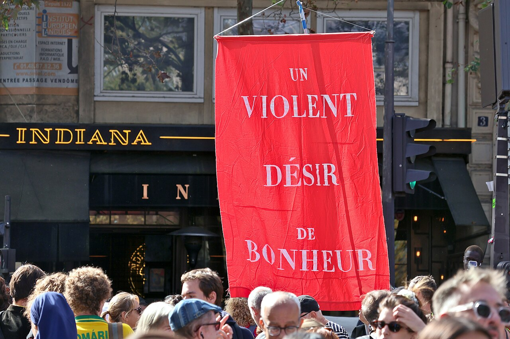
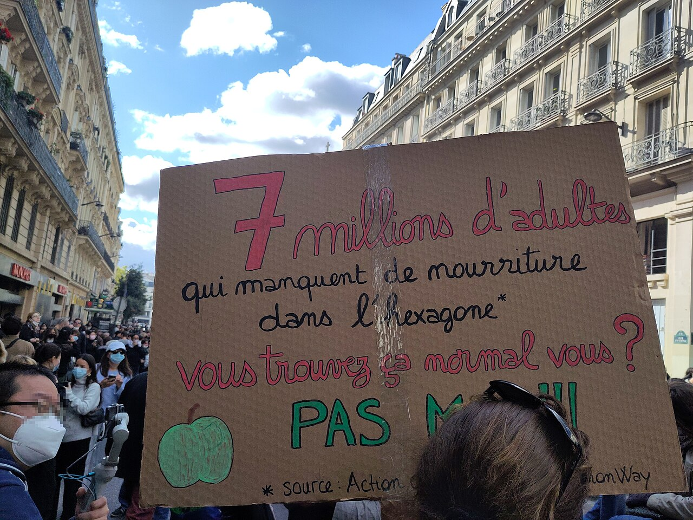
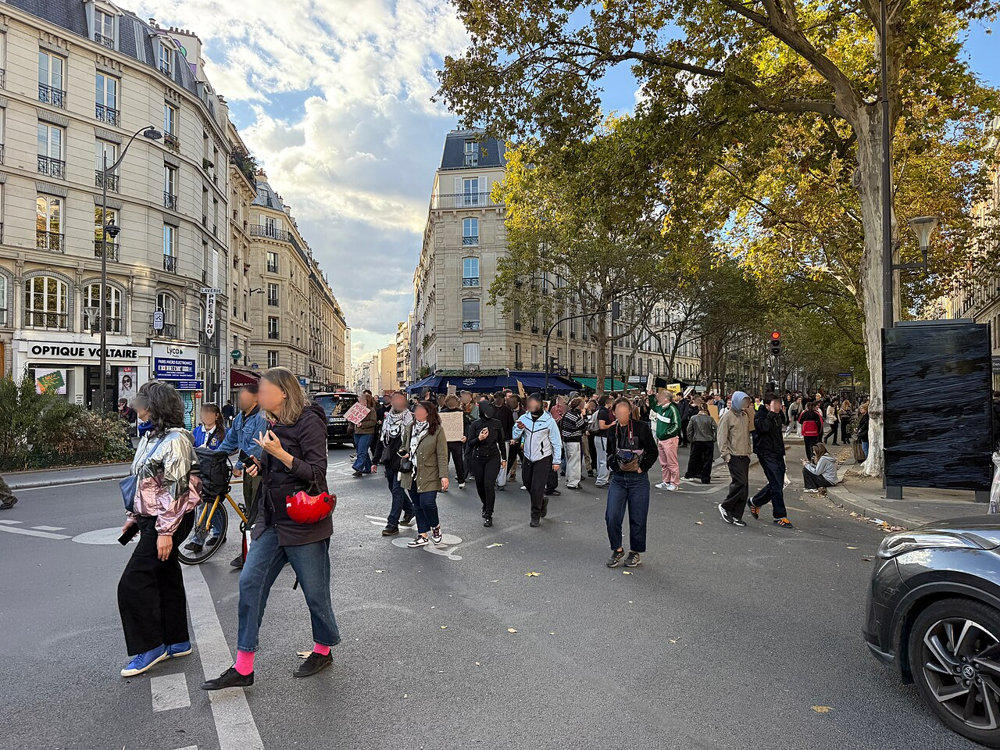

The issue being protested
Since 18 September 2026, lycée students have blocked schools over missing teachers, overcrowded classes, and buildings falling apart. The stand began in the Paris suburbs and became a national march. On 17 October, unions and the yellow vests joined them against fuel prices and the cost of living. The Interior Ministry counted about 550,000 people across France, including 110,000 in Paris, walking from Place de la République toward Place de Clichy. Officials said the vast majority were peaceful. This page honors those students and neighbors, who asked to study, to afford a life, and to gather in their own square.
What the march carried



Remember the pupils. Fund the schools. Leave the square open.
Share this page as a homage. Name what they marched for: teachers in the lycées, a life people can afford, and Place de la République still open after dark.